◆『「Main Interlude 深海電腦樂土 SE.RA.PH」發佈記念Pick Up召喚(每日交替)』期間◆
期間:2020年7月15日(三) 17:00～7月29日(三) 11:59
舉辦期間限定『「Main Interlude 深海電腦樂土 SE.RA.PH」發佈記念Pick Up召喚(每日交替)』！ ※就算未滿足Main Interlude關卡開放條件的狀態也能進行本召喚。
為了記念「Main Interlude 深海電腦樂土 SE.RA.PH」的發佈，下述的從者以期間限定登場！ ・★5(SSR)帝王花 ・★5(SSR)Meltryllis ・★4(SR)Passionlip
下述的從者以每日交替Pick Up！ ・★5(SSR)帝王花 ・★5(SSR)Meltryllis
另外，下述的從者常駐Pick Up！ ・★4(SR)鈴鹿御前 ・★4(SR)Passionlip
並且，2017年「Fate/EXTRA CCC特別活動Pick Up召喚」與2019年「復刻 Fate/EXTRA CCC特別活動Pick Up召喚(每日交替)」中登場的下述的期間限定概念禮裝常駐Pick Up！ ・★5(SSR)我らが征くは星の大海 ・★4(SR)月の海の生徒会 ・★3(R)ザ・ケージ
Pick Up期間中，Pick Up對象從者與概念禮裝的出現機率提升！
詳情請在聖晶石召喚畫面左下的召喚詳細確認。
11次召喚中確定1張★4(SR)以上和確定1位★3(R)以上的從者！ ※確定★4(SR)以上包含從者和概念禮裝。
◆有關從者的注意◆
※請注意本召喚做為每日交替，下述的從者就算舉辦期間中也有不會被抽出來的日子。
・★5(SSR)帝王花
・★5(SSR)Meltryllis
※下述的從者在Pick Up期間結束後不會追加到故事召喚。
・★5(SSR)帝王花
・★5(SSR)Meltryllis
・★4(SR)Passionlip
※下述的從者在Pick Up期間結束後仍會在故事召喚被抽出。
・★4(SR)鈴鹿御前
◆有關概念禮裝的注意◆
※下述的概念禮裝，Pick Up期間中能靠友情點數召喚獲得。
・★3(R)ザ・ケージ
※請注意在自動變還設定登錄★3(R)概念禮裝的情況，下述的概念禮裝會是自動變還的對象。
・★3(R)ザ・ケージ
◆『「Main Interlude 深海電腦樂土 SE.RA.PH」發佈記念Pick Up召喚(每日交替)』Pick Up內容◆
| Pick Up期間 | Pick Up內容 | |
|---|---|---|
| 每日交替Pick Up | 全天Pick Up | |
| 7/15(三) 17:00～ 7/16(四) 22:59 |
★5 Meltryllis | ★4 鈴鹿御前 ★4 Passionlip |
| 7/16(四) 23:00～ 7/18(六) 22:59 |
★5 帝王花 | |
| 7/18(六) 23:00～ 7/22(三) 22:59 |
★5 帝王花 ★5 Meltryllis |
|
| 7/22(三) 23:00～ 7/24(五) 22:59 |
★5 Meltryllis | |
| 7/24(五) 23:00～ 7/26(日) 22:59 |
★5 帝王花 | |
| 7/26(日) 23:00～ 7/29(三) 11:59 |
★5 帝王花 ★5 Meltryllis |
|
※請注意會以每日交替變更Pick Up的從者。

 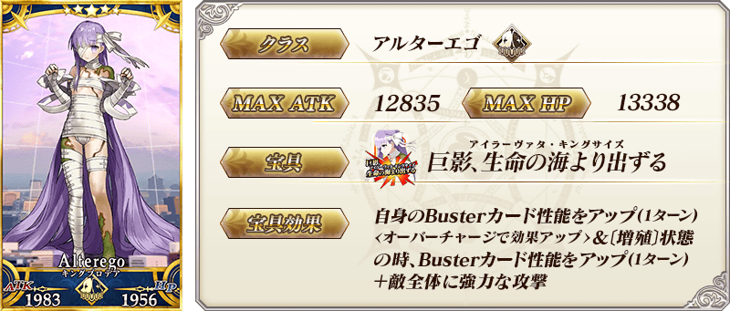
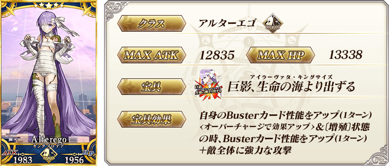
 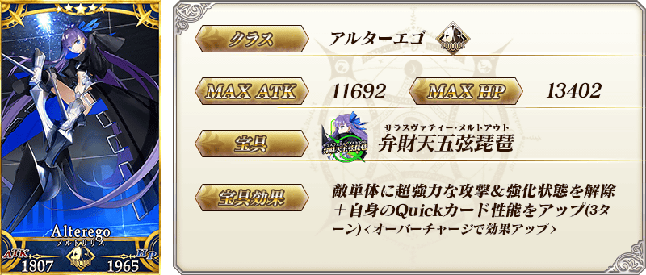
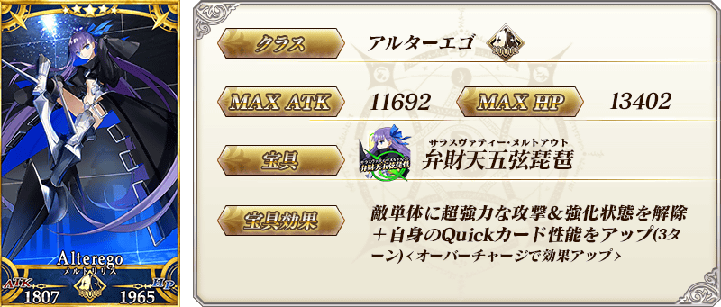

 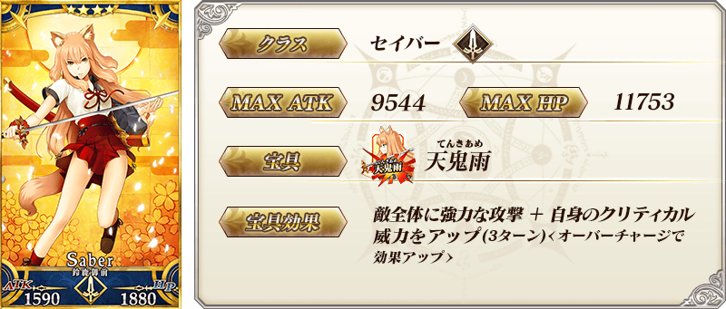
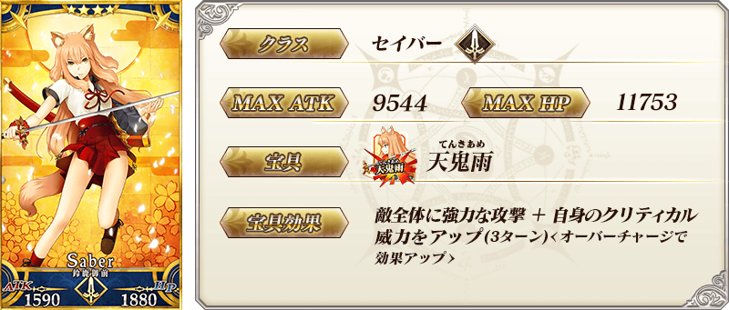
| 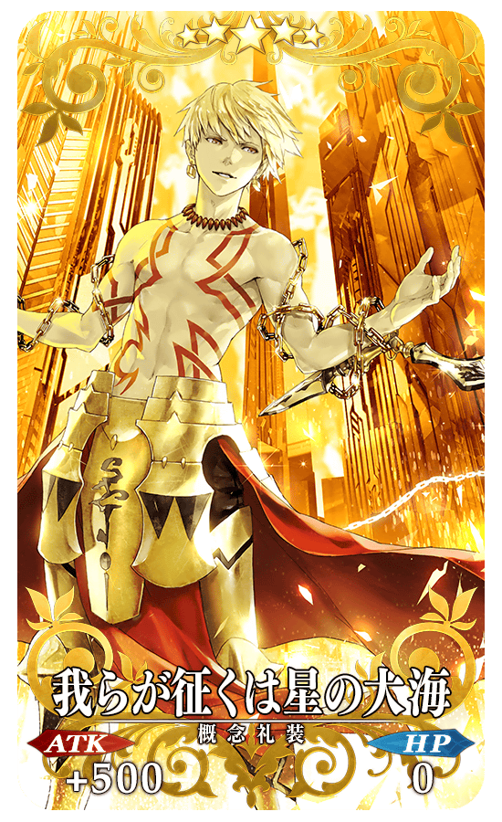 |
★★★★★SSR |
| 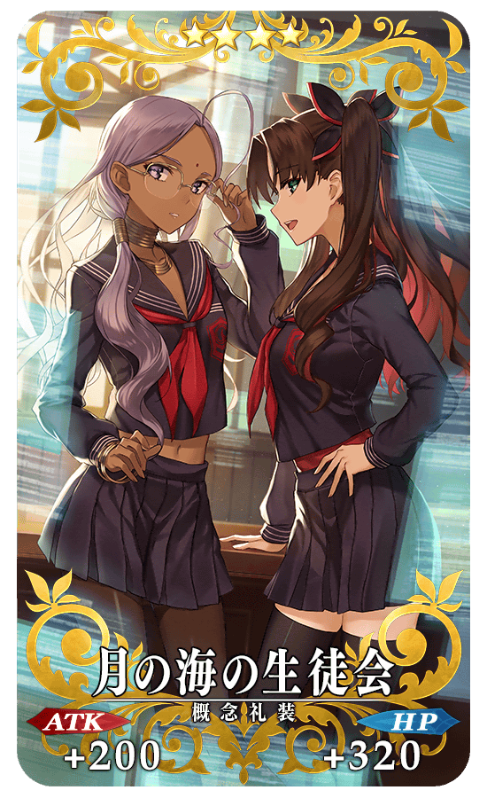 |
★★★★SR |

|
★★★R |


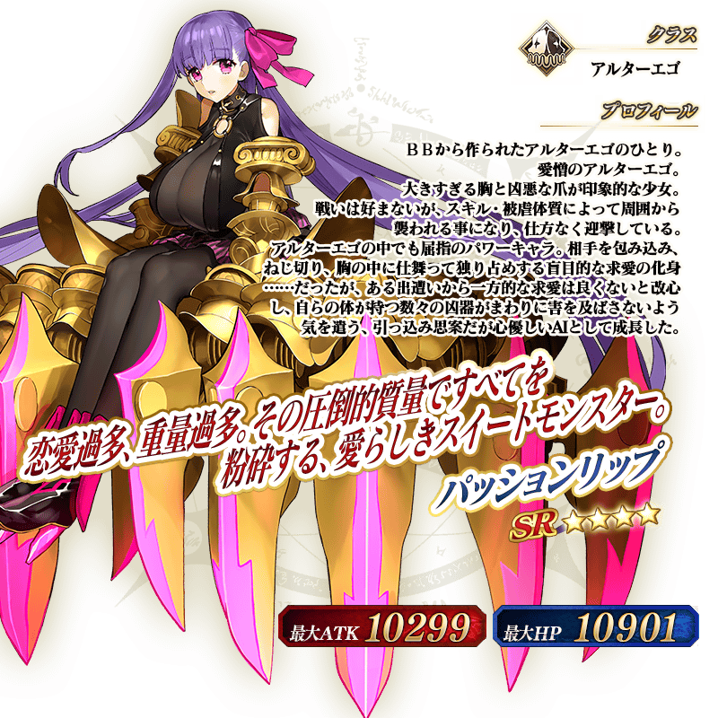
強化「★5(SSR)帝王花」「★5(SSR)Meltryllis」「★4(SR)鈴鹿御前」的特別關卡「從者強化關卡」，在迦勒底之門永久追加。
不僅進行對象從者的強化，也可獲得聖晶石做為關卡通過報酬。
※請注意在從者強化關卡沒有文字冒險部份。
◆追加時間◆
2020年7月15日(三) 17:00～
◆開放條件◆
持有的強化對象從者，必須使其最終再臨。
※未持有對象從者的話，不會出現關卡。
※關卡沒有舉辦期限。
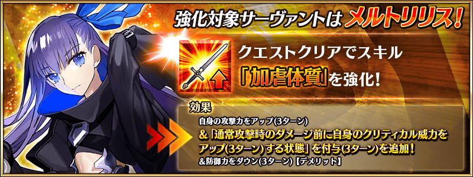
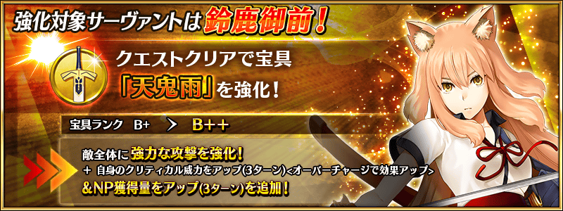
介紹在本召喚Pick Up的4位從者寶具演出！
在「Fate/Grand Order」官方網站內的公告中，以影片公開寶具演出，敬請確認。
【★5(SSR)帝王花】
【★5(SSR)Meltryllis】
【★4(SR)Passionlip】
【★4(SR)鈴鹿御前】
其他還有，『「Main Interlude 深海電腦樂土 SE.RA.PH」發佈記念宣傳活動』同時舉辦！
關於詳情，請自下述橫幅確認。
■「Main Interlude 深海電腦樂土 SE.RA.PH」發佈記念宣傳活動詳細情報 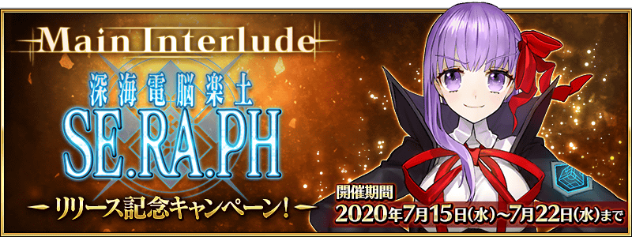